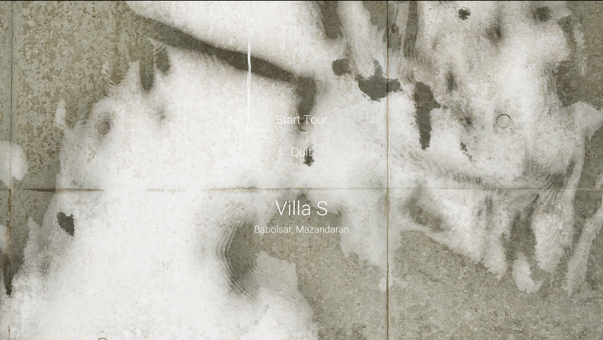
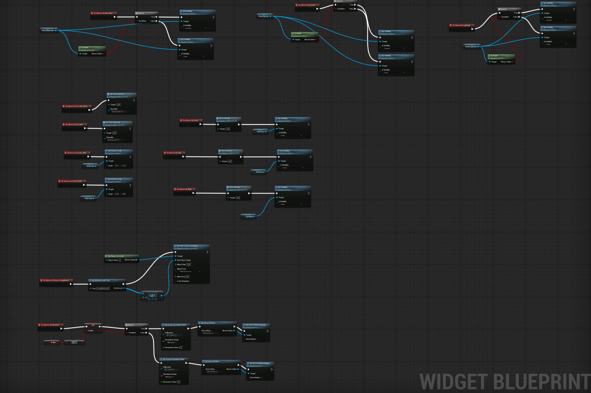

A playable, real-time tour of Villa S built in Unreal Engine 5. Instead of a fixed render, the villa runs as an interactive application—the visitor opens a menu, walks the rooms, and changes the time of day, the weather, and the material finishes live, all lit by Lumen global illumination.
The interface is built with UMG widgets driving Blueprint logic behind the scenes. The same environment also feeds a set of cinematic rain renders, graded in DaVinci Resolve, that show the mood the engine can reach in a final pass.
The headline look: a rainy evening at Villa S, rendered out of Unreal and graded in DaVinci Resolve. Wet courtyard, a lone tree beyond the glass, and rain streaking the full-height windows.

The first screen the visitor sees—“Villa S, Babolsar, Mazandaran” with Start Tour and Quit set over a raw concrete plate, establishing the material language before the tour begins.
Sun & Weather — a slider drives the sun’s position and the sky; toggling rain on rolls in clouds, wets the surfaces, and changes the whole mood in real time.

The Widget Blueprint graph wiring it together—button events that switch rooms, drive the sun and weather, and reassign materials on click.